magres.atoms¶
magres.atoms is a collection of user-friendly data structures for representing groups of atoms and their NMR parameters. The NMR parameter structures can calculate a variety of properties from the underlying tensors, according to a variety of conventions.
- class magres.atoms.MagresAtoms(atoms=None, lattice=None)¶
A collection of atoms, including lattice parameters, and (if available) lists of NMR parameters.
- classmethod load_magres(f)¶
A class method to easily load a magres.format.MagresFile and return the corresponding MagresAtoms.
>>> MagresAtoms.load_magres("path/to/magres/file.magres")
or
>>> MagresAtoms.load_magres(open("path/to/magres/file.magres"))
- class magres.atoms.MagresAtomsView(atoms=None, lattice=None)¶
A container for a collection of atoms with an optional lattice.
- add(atoms)¶
Add an extra atom or list of atoms.
- get_label(label, index=None)¶
Get a single atom of a particular label and index.
>>> atoms.get_label("C1", 2)
- get_species(species, index=None)¶
Get a single atom of a particular species and index.
>>> atoms.get_species('C', 2)
- label(label)¶
Return a MagresAtomsView containing only atoms of the specified label.
>>> atoms.label("C1")
- species(species)¶
Return a MagresAtomsView containing only atoms of the specified species.
>>> atoms.species('C')
- within(pos, max_dr)¶
Return all atoms within max_dr Angstroms of pos, including all images.
>>> atoms.within(p, 5.0)
- class magres.atoms.MagresAtom(magres_atom)¶
- Q¶
The quadrupole moment of this atom’s species and isotope.
- dist(r)¶
Calculate distance from this atom to another position or atom.
- gamma¶
The gyromagnetic ratio constant of this atom’s species and isotope.
- index¶
This atom’s label index.
- isotope¶
The isotope of this atom. Assumed to be most common NMR-active nucleus unless specified otherwise.
- label¶
This atom’s label.
- position¶
This atom’s position in cartesian coordinates. Units are Angstroms.
- species¶
This atom’s species.
- class magres.atoms.MagresAtomMs(atom, magres_ms, reference=None)¶
Representation of the magnetic shielding of a particular atom.
- aniso¶
The shielding anisotropy. Defined by
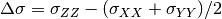
- asym¶
The asymmetric part of sigma.
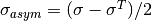
- eta¶
The shielding asymmetry. Defined by
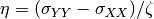
- evals¶
The eigenvalues of sigma, ordered according to the Haeberlen convention:
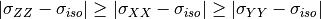
where
sigma_XX = evals[0] sigma_YY = evals[1] sigma_ZZ = evals[2]
- evals_mehring¶
The eigenvalues of sigma ordered according to the Mehring notation:
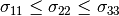
- evalsvecs¶
The eigenvalues and eigenvectors of the symmetric part of sigma, ordered according to the Haeberlen convention:
where
sigma_XX = evals[0] sigma_YY = evals[1] sigma_ZZ = evals[2]
- evalsvecs_mehring¶
The eigenvalues and eigenvectors of the symmetric part of sigma ordered according to the Mehring notation:
- evecs¶
The eigenvectors of sigma, ordered according to the Haeberlen convention:
where
sigma_XX = evals[0] sigma_YY = evals[1] sigma_ZZ = evals[2]
- evecs_mehring¶
The eigenvectors of sigma ordered according to the Mehring notation:
- iso¶
The isotropic part of sigma. Defined by
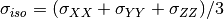
- sigma¶
The sigma tensor, i.e. the magnetic shielding.
- skew¶
The skew of sigma. Defined by

- span¶
The span of sigma. Defined by
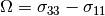
- sym¶
The symmetric part of sigma.
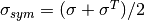
- zeta¶
The shielding anisotropy (alternative). Defined by
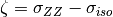
- class magres.atoms.MagresAtomEfg(atom, magres_efg)¶
Representation of the electric field gradient on a particular atom.
- Cq¶
The Cq of the V tensor.
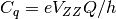
Where Q is the quadrupole moment of this particular species, e is the electron charge and h is Planck’s constant.
- V¶
The EFG V tensor in atomic units.
- evals¶
The eigenvalues of V, ordered according to the Haeberlen convention:
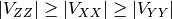
where
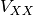 = evals[0]
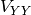 = evals[1]
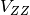 = evals[2]
- evalsvecs¶
The eigenvalues and eigenvectors of V, ordered according to the Haeberlen convention:
where
= evals[0]
= evals[1]
= evals[2]
- evecs¶
The eigenvectors of V, ordered according to the Haeberlen convention:
where
= evals[0]
= evals[1]
= evals[2]
- class magres.atoms.MagresAtomIsc(atom1, atom2, magres_isc)¶
Representation of the indirect spin coupling between two atoms.
- J¶
The spin-spin coupling J tensor.
- J_aniso¶
The J anisotropy.
- J_asym¶
The asymmetric component of the indirect spin-spin coupling tensor J.
- J_eta¶
The K principal component asymmetry.
- J_iso¶
The isotropic component of the indirect spin-spin coupling J tensor.
- J_sym¶
The symmetric component of the indirect spin-spin coupling tensor J.
- K¶
The reduced indirect spin-spin coupling K tensor.
- K_aniso¶
The K anisotropy.
- K_asym¶
The asymmetric component of the reduced indirect spin-spin coupling tensor K.
- K_eta¶
The K principal component asymmetry.
- K_iso¶
The isotropic component of the reduced indirect spin-spin coupling tensor.
- K_sym¶
The symmetric component of the reduced indirect spin-spin coupling tensor K.
- dist¶
The distance between the two atoms involved.
- symbol¶
A textual symbol representing this coupling.